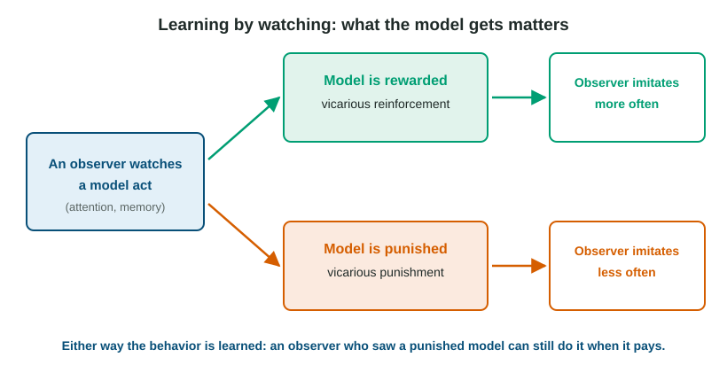

Social, Cognitive, and Neurological Factors in Learning
Not all learning needs direct reinforcement.
Part 1 · Hook
Why this matters
Part 2 · Before you start
What this builds on
Part 3 · Prerequisite check
Quick check before you start
1. Taking away a teen's phone after a missed curfew makes late nights less likely. What is this?
- Negative punishment
- Negative reinforcement
- Positive punishment
- Extinction
Show the answer
Something wanted is removed and the behavior decreases.
- Correct: Negative punishment:
- Negative reinforcement:
- Positive punishment:
- Extinction:
2. In a study, children are randomly assigned to watch one of three videos. What does random assignment allow?
- A cause-and-effect conclusion about the videos
- Results that apply to every child in the world
- A study with no ethical concerns
- Data that need no statistics
Show the answer
Random assignment makes the groups alike at the start, so a difference afterward can be credited to the manipulated variable.
- Correct: A cause-and-effect conclusion about the videos:
- Results that apply to every child in the world:
- A study with no ethical concerns:
- Data that need no statistics:
Part 4 · See it
See it first

Part 5 · Step by step
How it works, step by step
- An observer pays attention to a model and remembers what the model didthe behavior is learned without the observer ever being reinforced
- The model is rewarded (vicarious reinforcement)the observer is more likely to perform the behavior
- The model is punished (vicarious punishment)the observer is less likely to perform it, though it is still learned
- A rat explores a maze with no foodit builds a cognitive map that shows only when a reward gives it a reason (latent learning)
Part 6 · Key ideas
Key ideas
- Social learning theory (observational learning): people learn by watching models. Attention and memory come first, then the ability to reproduce the act, then a reason to do it.
- Vicarious reinforcement and vicarious punishment work through the model's consequences, not the observer's own. They change performance more than learning.
- Cognitive factors: latent learning stays hidden until there is a reason to show it; a cognitive map is a mental layout of a place; insight learning is a sudden whole solution, not gradual trial and error.
- Neurological factors: the brain's reward circuits, using dopamine, respond most to rewards that are better than expected, which helps strengthen the behavior that came before.
Part 7 · Misconception
A common mistake
The wrong idea: If a child sees a model punished, the child does not learn the behavior.
What actually happens: The child usually learns it but does not perform it. When an incentive appears, the behavior shows up. Learning and performance are different.
Part 8 · Check yourself
Check yourself
Exam-style questions. Anything you miss goes into your review queue.
1. Four-year-old Mia watches her older brother get a cookie for saying "please." The next day, Mia says "please" when she asks for a snack, though no one has ever rewarded her for it. Which concept best explains Mia's behavior?
- Vicarious reinforcement
- Positive reinforcement of Mia
- Latent learning
- Stimulus generalization
Show the answer
Vicarious reinforcement: seeing a model rewarded makes the observer more likely to imitate.
- Correct: Vicarious reinforcement: Right: Mia saw a model rewarded and became more likely to copy the behavior herself.
- Positive reinforcement of Mia: Mia was never rewarded herself, so her behavior was not directly reinforced.
- Latent learning: Latent learning is learning that stays hidden until a reason to show it appears. Mia learned from watching a model be rewarded.
- Stimulus generalization: Generalization is a conditioned response spreading to similar stimuli. Mia copied a behavior.
2. A chimpanzee cannot reach a banana hung from the ceiling. After sitting still for several minutes, it suddenly stacks three boxes, climbs them and grabs the fruit. Which concept describes this?
- Insight learning
- Shaping
- Latent learning
- Superstitious behavior
Show the answer
Insight: the solution appears suddenly, after a pause, as a whole, the way Wolfgang Köhler described his chimpanzees doing.
- Correct: Insight learning: Right: a sudden grasp of how the parts of a problem fit together, not gradual trial and error.
- Shaping: Shaping needs a trainer to reinforce steps. The chimp solved it alone, all at once.
- Latent learning: Latent learning is earlier learning that shows up when a reward appears. This is a new solution reached suddenly.
- Superstitious behavior: Superstitious behavior is strengthened by accidental reinforcement; this is purposeful problem solving.
3. Jamal rode the bus around his city for a year without paying attention to routes. When the bus line closed, he walked to school by an efficient route on his first try. Which concept explains his success?
- Latent learning of a cognitive map
- Shaping by successive approximations
- Vicarious reinforcement
- Habituation to the city
Show the answer
He formed a mental map of the city (a cognitive map) without reinforcement, and it showed once he had a reason to use it: latent learning.
- Correct: Latent learning of a cognitive map: Right: he learned the layout without a reward, and it showed when he needed it.
- Shaping by successive approximations: No one reinforced steps toward walking the route.
- Vicarious reinforcement: He did not watch anyone being rewarded for walking that route.
- Habituation to the city: Habituation is a fading response to a repeated stimulus, not knowledge of a layout.
Data
Invented data: rats in a maze, with and without food
4. On day 10 the "food from day 9" group suddenly makes about as few errors as the group fed every day. What does this show?
- They had learned the maze earlier without showing it
- One day of food taught them the whole maze
- Rats that get no food at the goal learn nothing about a maze
- The rats had habituated to the maze
Show the answer
Their sudden drop means the learning happened earlier, unrewarded, and was revealed once a reward appeared: latent learning.
- Correct: They had learned the maze earlier without showing it: Right: latent learning. Food gave them a reason to use a cognitive map they already had.
- One day of food taught them the whole maze: Learning the maze from scratch took the always-fed rats about ten days, so one day is too fast.
- Rats that get no food at the goal learn nothing about a maze: The never-fed rats improved a little, and the day-9 group shows unfed rats learned the layout.
- The rats had habituated to the maze: Habituation would mean a weaker response to the maze, not fewer wrong turns once food appeared.
5. Which concept names what the day-9 rats most likely formed during days 1 to 8?
- A cognitive map
- A conditioned taste aversion
- A secondary reinforcer
- An unconditioned response
Show the answer
Exploring without food, the rats built a mental representation of the maze, a cognitive map.
- Correct: A cognitive map: Right: a mental picture of the maze's layout.
- A conditioned taste aversion: Taste aversion is a learned dislike of a food after illness.
- A secondary reinforcer: A secondary reinforcer is a stimulus that gained value by being paired with a reward.
- An unconditioned response: A UCR is an unlearned reflex. Knowing a maze is learned.
Study
Invented study: copying a model who builds a tower
Introduction
Researchers asked whether children copy a new behavior more often when they see the model rewarded for it.
Participants
60 children aged 4 and 5 from three preschools took part with written consent from a parent. Each child also agreed to play and could stop at any time. Children were randomly assigned to one of three groups of 20.
Method
Each child watched a two-minute video of an adult building a tower in an unusual way: blocks stacked in a zigzag, then tapped twice with a spoon. In the model-rewarded group, the adult got praise and a prize at the end. In the model-scolded group, the adult was told "That is not how we play." In the no-consequence group, the video simply ended. Each child was then left alone with the blocks and spoon for five minutes, and a coder who did not know the child's group counted how many of the model's six actions the child copied.
Results
Children copied a mean of 4.1 actions in the model-rewarded group, 2.6 in the no-consequence group and 1.2 in the model-scolded group.
Invented study for practice.
6. Which concept best explains why children in the model-scolded group copied the fewest actions?
- Vicarious punishment
- Negative reinforcement
- Latent learning
- Insight learning
Show the answer
The observers saw the model punished and imitated less: vicarious punishment.
- Correct: Vicarious punishment: Right: seeing the model scolded made the observers less likely to perform the behavior.
- Negative reinforcement: Nothing unpleasant was removed after the children acted.
- Latent learning: Latent learning explains behavior appearing later when a reward appears, not lower copying after a model is scolded.
- Insight learning: Insight is a sudden solution to a problem, not copying.
Part 9 · Summary
Summary
Part 10 · Up next
What comes next
Part 11 · Connections